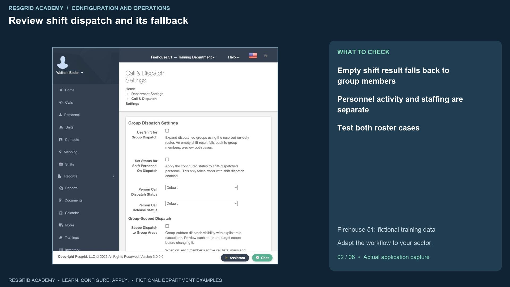
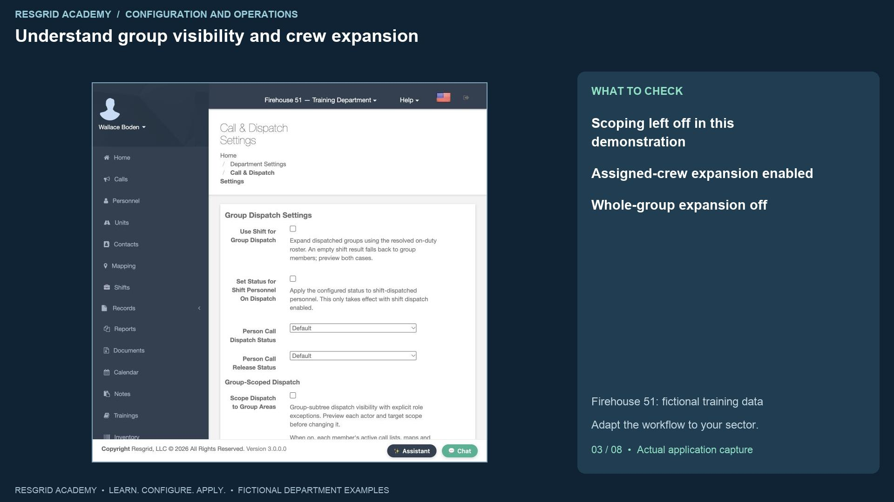
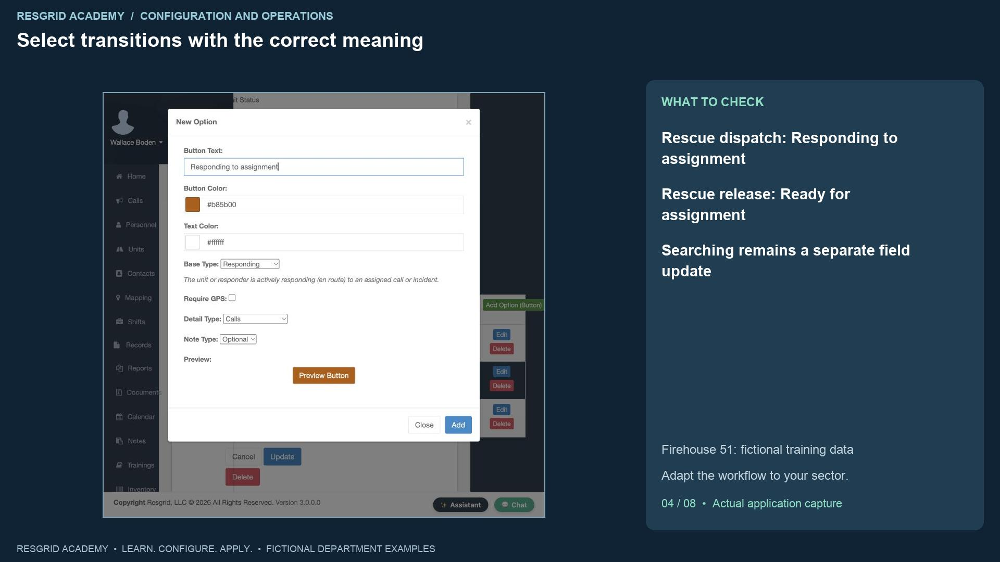
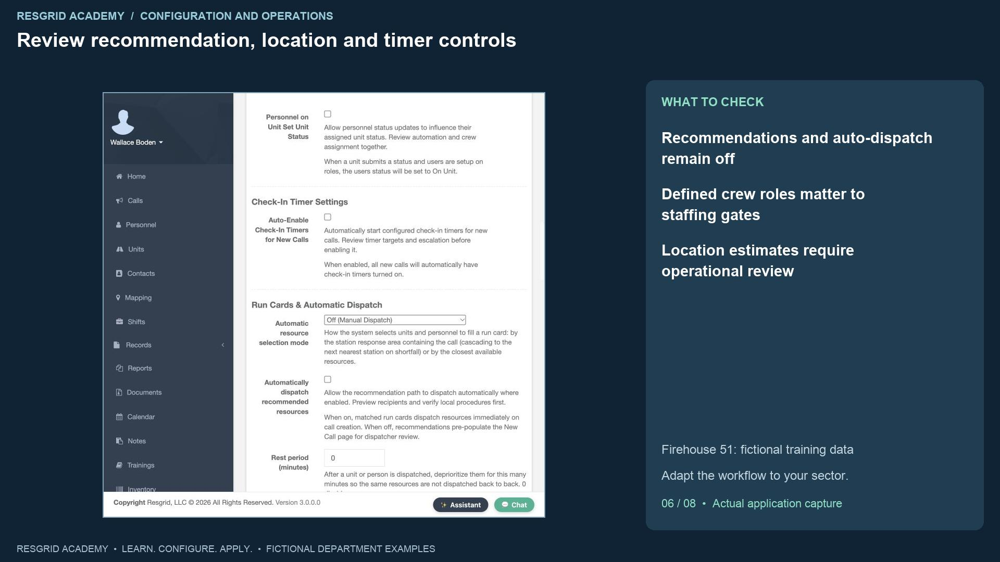
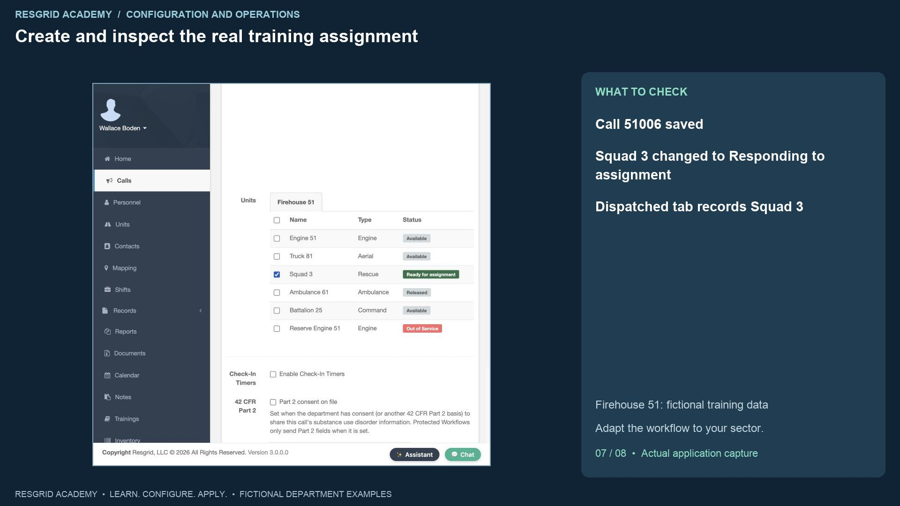
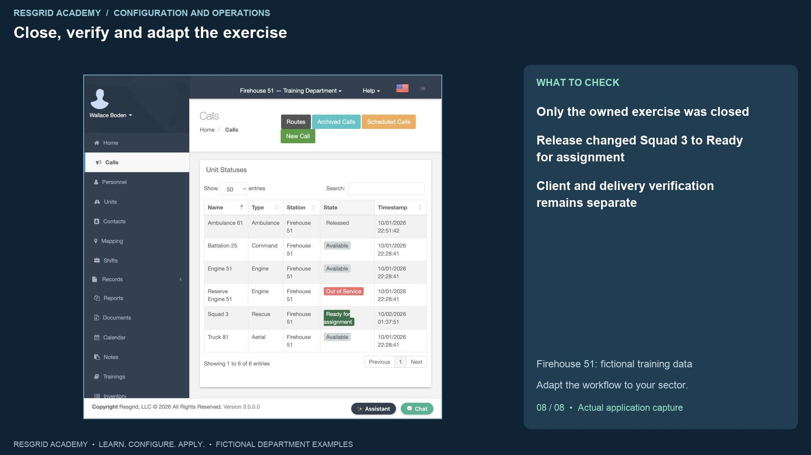

Configuration walkthrough
Control recipient selection and dispatch behavior
Follow each step, understand its impact, and try the practice exercise with your department.
Step 1
Separate audience, transitions and intake policy

Read the transcript
Dispatch settings decide more than which button the dispatcher presses. They affect the intended audience, automatic activity changes, and the information needed before creating a call. Open Department Settings, then Call and Dispatch Settings. Begin with a written example: who should receive a search assignment, what should the unit status become, and what information must accompany it? Our fictional Firehouse fifty-one roster provides the screen data. The same decisions apply to a mobile mental health team, a security patrol, a wildland crew, or a plant emergency team. A software dispatch is an assignment; it does not establish qualifications, clinical scope, arrival, or a completed response. In this isolated training department, real outbound notifications are suppressed. We can inspect saved configuration and resource transitions, but this exercise does not prove external alert delivery.
Step 2
Review shift dispatch and its fallback

Read the transcript
Use Shift for Group Dispatch resolves the on-duty roster when a group is selected. Read the fallback displayed on this screen: an empty shift result falls back to group members. Do not assume that switching it on guarantees an on-duty-only audience. Check a populated shift and an empty shift before relying on the setting. We enable shift dispatch and Set Status for Shift Personnel on Dispatch, selecting Responding for dispatch and Standing By for release. These activity changes are separate from staffing availability. For mobile response, check the actual scheduled team; for search and rescue, check the mobilization roster. Security and industrial departments should review site or facility coverage and shift boundaries. Wildland crews need to consider overnight and extended assignments. This recording verifies the saved choices; it does not run every roster and fallback combination.
Step 3
Understand group visibility and crew expansion

Read the transcript
Group-Scoped Dispatch limits supported call lists, maps and nearest-resource views to the member’s group subtree, with exceptions for reported or assigned calls, department administrators and explicitly selected department-wide roles. The screen explains the scope; review real actors before changing access. We leave scoping off and add no role exceptions. A security company can review site visibility while its central desk needs a broader view; an industrial department can review facility groups. Under Unit Dispatch Settings, Also Dispatch to Assigned Personnel expands an assignment to the unit’s current crew. Also Dispatch to Entire Group can reach a much larger station audience. We enable assigned-crew expansion and leave whole-group expansion off. An empty or stale crew assignment remains a problem; a saved switch cannot establish who is actually aboard. This exercise does not claim that crew recipients or real alerts were verified.
Step 4
Select transitions with the correct meaning

Read the transcript
The department-wide unit defaults use built-in meanings. Our defaults are Responding on dispatch and Released on release. The unit type override table appears for types with custom unit statuses. For the Rescue type, we choose Responding to assignment on dispatch and Ready for assignment on release. Both options belong to the Field Response set created in the earlier lesson. We added Responding to assignment with the Responding meaning before selecting it here. Searching assigned area remains a later declaration by the field team. Automatically assigning Searching at call creation would imply that search activity had already begun. Use the same distinction for a patrol sent to an investigation, a mobile team traveling to a visit, a wildland crew responding to staging, or an industrial team approaching an incident. Consider whether automatic readiness on release fits local procedures when equipment checks or crew recovery are needed.
Step 5
Configure intake requirements and test them

Read the transcript
New Call Form Fields separates Visible from Required. Core name, nature, priority and type remain part of intake. We first save G P S Coordinates and Note as required. Creating the synthetic search exercise without a location is rejected with a geolocation requirement. We then enter both decimal coordinates and try again. In this build the same rejection remains. That is a recorded web-form limitation, not a successful validation. We return to settings, keep G P S visible but optional, retain Note as required, and save the working configuration for the rest of the demonstration. The note is deliberately filled in on the successful call; this lesson does not claim that it proves empty rich-text note enforcement. Test the web form and each client your department uses. For remote searches, patrol sites and plant areas, review coordinates, addresses and indoor locations against the actual operating procedure.
Step 6
Review recommendation, location and timer controls

Read the transcript
Automatic resource selection can be manual, station based or closest-resource based. Matching run cards and automatic dispatch are covered in the next lesson. Here we leave recommendations on Off, automatic dispatch unchecked, move-up recommendations off and the staffing gate off. The screen warns that units without defined roles pass the staffing gate; review unit definitions before treating a threshold as protection. A location-age limit rejects old positions where the selection path applies. Including stale locations changes that assumption. Routed driving estimates use the configured mapping provider and can add cost and latency. Straight-line estimates do not account for road access, terrain or a plant’s controlled entrances. Check-in timers need target, duration, warning and escalation procedures. We leave automatic timers off. Timer defaults and call-type overrides have their own save actions, separate from the main settings form.
Step 7
Create and inspect the real training assignment

Read the transcript
Click the main Save for Call and Dispatch Settings and inspect its success message. Open Calls, then New Call. Enter Training, S A R dispatch policy exercise, choose Rescue and Routine, and use the identifier DEMO SETTINGS zero one. Enter a clear synthetic nature, an accountability note and the training coordinates. Select Squad Three, which currently shows Ready for assignment. Create and Dispatch Call returns to the dashboard. The new call is present, and Squad Three now shows Responding to assignment with a new timestamp. Open the call and inspect its saved nature, note, identifier and Dispatched tab. Squad Three is recorded there. These are observed application results. The displayed assignment does not prove that a device received a push, that a crew acknowledged it, or that the unit has arrived. Those need separate operational tests.
Step 8
Close, verify and adapt the exercise

Read the transcript
Close only this training call. Enter a completion note describing the configuration test and leave Send Notification unchecked. After saving, the active list no longer includes the exercise, and Squad Three displays Ready for assignment. That verifies the custom release transition. For community paramedicine and mental health response, review team audiences, approved operational notes and post-visit availability. For search and rescue, review mobilization fallback, accountability and sustained searches. For security, review patrol audiences and site coverage. For wildland contractors, review crew dispatch, overnight assignments and rest assumptions. For industrial response, review facility audiences and equipment readiness before automatically releasing a resource. Your practice exercise is to explain the intended audience, configure one transition, create and close a synthetic call, inspect both changes and record any client or delivery behavior still awaiting verification.
Apply it to your department
- Community paramedicine and mental health response
- Compare dispatching the scheduled mobile team with dispatching every member of its response-area group; review who should receive a visit alert.
- Search and rescue
- Compare alerting the active search shift with paging an entire volunteer group; check crew propagation and excluded unavailable members.
- Security companies and departments
- Dispatch the on-duty patrol shift or selected site group; review whether assigning a vehicle should also alert its staffed officers.
- Wildland contractors
- Dispatch the assigned crew and support vehicle; verify that off-assignment contractor personnel are not unintentionally included.
- Industrial emergency response teams
- Dispatch the on-duty facility team; review department-wide specialist role exceptions before enabling group-scoped recipient selection.
Put it into practice
Check your department’s enabled modules, permissions and provider configuration. Save each change on its own screen, review the retained value, and confirm the result with the people and devices that will use it.